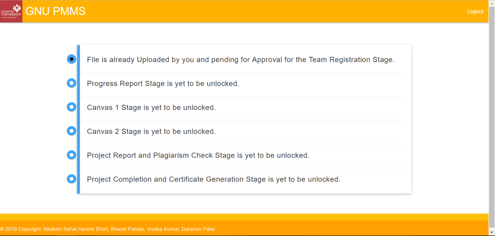

GNU Project Management System
Final Semester Internship Project at Dev-IT
December 2018 - March 2019
5 members
Motivation
Throughout the course of their degree, students develop several projects as part of course requirement or as independent study. The professors and mentors whose duty is to guide and oversee the development of the project, find it difficult to keep track of each and every student. The more students there are the more difficult it is to maintain the all the required documents submitted by the students, evaluate them and keep track of their progress.
To solve these problems we created a centralised system for our university to manage student projects. The system not only provides ease in systematically managing the projects but also provides transparency in the project submission process with details of all the stages and grades available at a central location which can be accessed any time by both the students and faculties.
Research
- Existing Solutions
For the first step we analyzed a similar, widely used application in the state, used by colleges affliated to GTU: GTU PMMS. We identified the desirable features and the drawbacks of the existing system. We also went interviewed the primary stakeholders, the professors at our university to build up the requirements.
Research
- Technologies to use
Since Dev-IT developed the original system they had the original code base which could be reused.
However it was made using an old development based on .NET that was outdated now and also required
a considerable learning time. The new system also had a lot of changes, hence the old code could not
be reused completely.
To implement lot of features in a limited time frame we decided to use Django,
a web framework based Python. Django provided object to relational mapping,
which means all the models or classes in the application are automatically converted
to tables and any changes are easily integrated. It also has an auto-generated admin portal
and templates to quickly develop frontend pages.

Design
Based on the research we identified the key stakeholders in the system. We determined who will be using the app and what basic functionality would be needed. Using that information we created wireframes for the UI which were decided to have information arranged systematically along with visualisations where needed so as to get the information conveyed clearly.
Development and Testing
We developed the first version of the app with the minimal but most important features which were reviewed and tested by our professors who provided further suggestions.

Future Enhancements and Learning
- Improving UI to make it mobile friendly
- Functionality to send reminders to student when deadlines are close
- Batch approve facility for internal guide
Since this project was developed while I was doing an internship I got to learn a lot about how projects are implemented at professional level.